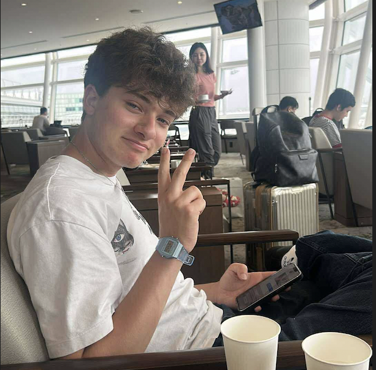

First year undergraduate student at the University of Malta pursuing a BSc in Computing Science & Mathematics, looking for practical experience in IT through internships or entry-level roles. Seeking an opportunity to apply academic knowledge in programming and mathematics within a practical IT environment. Outside of school, I love to read (Currently reading & Favourite book), I also love nature, travelling, cats & coffee. check out my links below
